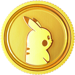

![[pkb]](meow.png)
What is PokeSwap and What does it do?
;swap is a feature lets you swap out a Pokemon of your choice to receive a completely random one.
How to earn Swap Tickets?
You can earn 2 free ![[pkb]](ticket.svg) Swap Tokens every day, by typing ;swap (view your ;checklist to see when they're available).
Swap Tokens every day, by typing ;swap (view your ;checklist to see when they're available).
Can i use PokeSwap without Tickets?
Any additional swaps cost  5,000 PokeCoins per swap (2.5k for Patreon)
Can i obtain Legendaries, Shinies, and Goldens from PokeSwap?
Here are the Shiny that you can get from PokeSwap
:43: Oddish, : :92: Gastly, :236: Tyrogue, : :280: Ralts and :374: Beldum!
You also have a chance at obtaining a :374_: Beldum if you're extremely lucky.
What are Multipliers?
Every 20 swaps will increase your ![[pkb]](fire.svg) Multiplier by 1% (max 10%). Maxing out your Multiplier to 10% gives an additional 5% boost, for a total boost of 15%. Multipliers reset at 12AM EST every day.
Multiplier by 1% (max 10%). Maxing out your Multiplier to 10% gives an additional 5% boost, for a total boost of 15%. Multipliers reset at 12AM EST every day.
Multipliers increase your chances at receiving exclusive or Pokemon (a multiplier of 1.15x increases your Shiny/Golden odds by 15% for that day)
Swapping out Shinies or Goldens DOES boost your rate (slightly). Do this at your own risk